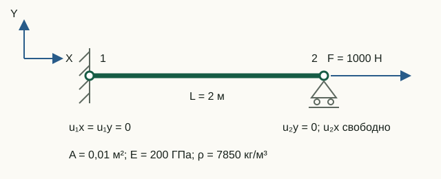
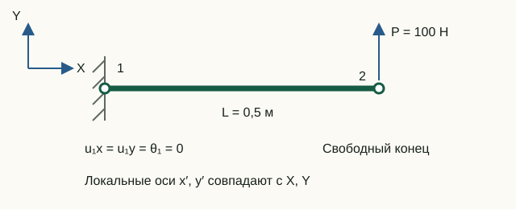

От узловых перемещений к усилиям
Решатель сначала находит глобальный вектор перемещений u. Чтобы интерпретировать состояние отдельного элемента, нужно выбрать принадлежащие ему компоненты, перейти в локальные оси и применить ту же локальную матрицу жёсткости, которая участвовала в сборке.
Три шага восстановления
Для элемента e функция recoverElementResults выполняет:
ue = u(dofse)
ulocal = Te ue
qlocal = klocal ulocal
Первое выражение собирает компоненты по element.dofs, а не по номерам узлов. Второе переводит глобальные перемещения в собственные оси элемента. Третье даёт обобщённые узловые силы, действующие на элемент и сопряжённые его локальным СС.
elementDisplacements = u(element.dofs);
localDisplacements = element.transformation * elementDisplacements;
localEndForces = element.localStiffness * localDisplacements - feLocal;Что возвращает статический расчёт
solveStatic помещает массив elementResults в структуру результата. Запись каждого элемента содержит:
| Поле | Содержание | Система координат |
|---|---|---|
globalDOFs | адреса компонентов элемента в полном векторе | глобальная |
localDisplacements | перемещения и повороты концов | локальная |
localEndForces | обобщённые силы и моменты на концах | локальная |
axialStrain | постоянная осевая деформация | вдоль локальной оси x |
axialStress | осевое напряжение Eε | вдоль локальной оси x |
axialForce | осевая сила Aσ | растяжение положительно |
Стержень типа 112
Локальный порядок перемещений стержня равен [u1; v1; u2; v2]. Осевая деформация, напряжение и сила вычисляются по формулам:
ε = (u2 − u1)/L, σ = Eε, N = Aσ
Положительные ε, σ и N означают растяжение, отрицательные — сжатие. При растяжении локальные концевые усилия имеют противоположные знаки:
qlocal = [−N; 0; N; 0]
Это не противоречие: скаляр N описывает состояние стержня, а компоненты q показывают направления сил на его двух концах.
Рама типа 113
Для рамного элемента локальные векторы имеют согласованный порядок:
ulocal = [u1; v1; θ1; u2; v2; θ2]
qlocal = [N1; V1; M1; N2; V2; M2]
Знак каждой силы или момента совпадает с положительным направлением сопряжённой локальной СС. Например, для горизонтальной консоли длиной L и силы P в положительном направлении локальной оси y на свободном конце:
qlocal = [0; −P; −PL; 0; P; 0]
localEndForces содержит результат klocalulocal − feLocal. Для элементной нагрузки из этого произведения вычитается суммарный согласованный вектор feLocal; он доступен как equivalentLocalLoadVector. Поля axialStress и axialForce описывают только осевое состояние; напряжения по назначенному профилю рассматриваются отдельно ниже.
Усилия элемента и реакции — не одно и то же
Реакции вычисляются в глобальных координатах для всей модели:
R = K u − F
Концевые усилия относятся к одному элементу и записаны в его локальных осях. В общем узле вклады нескольких элементов сначала поворачиваются обратно (транспонированная T) и суммируются:
K u = Σ TeT qlocal,e
Затем из внутренних узловых сил вычитается внешняя нагрузка. Поэтому localEndForces нельзя без преобразования и сборки называть реакциями. Они совпадают напрямую только в специальных случаях — например, у единственного горизонтального элемента на закреплённом конце, если там нет приложенной узловой нагрузки.
Лабораторная 07. От перемещений к напряжениям и концевым усилиям
Цель — независимо проверить результаты двух задач через растяжение стержня и равновесие консоли.


Исходные данные и обозначения
Для стержня используются данные схемы лабораторной 03: L = 2 м, A = 0,01 м², E = 200 ГПа, F = 1000 Н. Для консоли L = 0,5 м, A = 10⁻⁴ м², E = 200 ГПа, I = 0,33·10⁻⁸ м⁴, P = 100 Н вверх. Обе модели горизонтальны, их локальные оси совпадают с глобальными.
До запуска: расчёт на бумаге
- Для стержня найдите σ = F/A, ε = σ/E, ΔL = εL и N = σA.
- Для консоли запишите равновесие по Y и по моменту относительно узла 1. Найдите R₁y и M₁ с учётом направления силы на схеме.
Запуск в Octave
Выполните из корня проекта. Готовая функция печатает результаты; для этой работы изменять её код не требуется.
addpath(pwd);
setup;
addpath(fullfile(pwd, "reference", "examples"));
r = example_07_result_recovery();Работа с результатами
- Из
Truss local displacements [u1; v1; u2; v2]найдите u₂ − u₁ и разделите на длину. Сверьте деформацию, напряжение и продольную силу с напечатаннымиTruss strain,stressиaxial force. - В
Truss local end forcesнайдите две осевые компоненты. Объясните, почему их знаки противоположны, хотя продольная сила N положительна и стержень растянут. - Подпишите шесть компонент
Frame local end forces [N1; V1; M1; N2; V2; M2]с единицами Н или Н·м. Сверьте первые три сFrame support reactions, последние три — с нагрузкой свободного конца. - Проверьте равновесие: V₁ + V₂ = 0 и M₁ + M₂ + V₂L = 0. По линейности предскажите знаки деформации, напряжения, усилий и реакций при обращении нагрузки.
Стержень: ΔL = 10⁻⁶ м, ε = 5·10⁻⁷, σ = 100 кПа, N = 1000 Н; концевые силы [−1000; 0; 1000; 0] Н. Консоль: [0; −100; −50; 0; 100; 0], где третья и шестая компоненты измеряются в Н·м. Это компоненты узловых концевых сил в положительных локальных осях, а не готовые знаки эпюр в сечениях.
Что включить в отчёт
Обе схемы, ручные расчёты, таблицу «аналитически — Octave — единицы» и два уравнения равновесия консоли; объяснение знаков концевых усилий.
Все лабораторные одной командой
run_reference_examples последовательно запускает семь примеров и возвращает их результаты в полях с именами функций:
addpath(pwd);
setup;
addpath(fullfile(pwd, "reference", "examples"));
results = run_reference_examples();Для тихой проверки используйте run_reference_examples(false). Функция запуска определяет корень репозитория по собственному файлу, поэтому после добавления каталога примеров в путь не зависит от текущего рабочего каталога. Исключения не перехватываются: первая нарушенная проверка немедленно останавливает запуск.
Исходный код главы
recoverElementResults.m— выбор СС, переход в локальные оси и вычисление усилий;solveStatic.m— реакции и включение результатов элементов в ответ;tests/test_result_recovery.m— регрессионные проверки стержня, поворота и консоли;example_07_result_recovery.m— исполняемая лабораторная;run_reference_examples.m— единая точка запуска лабораторных.
Теория
- Young W. Kwon, Hyochoong Bang, The Finite Element Method Using MATLAB, с. 201 для стержня и с. 261 для балочного элемента.
- R. D. Cook, D. S. Malkus, M. E. Plesha, Concepts and Applications of Finite Element Analysis, 3-е изд., с. 113.
Эпюры загруженных элементов
При суммарных локальных интенсивностях qx, qy и концевом векторе f: N(x)=−f₁−qx·x, V(x)=−f₂−qy·x, M(x)=−f₃+f₂·x+qy·x²/2. Постпроцессор учитывает внутренний экстремум M. Скалярные axialStrain, axialStress, axialForce обозначают средние осевые значения, а не изгибные напряжения. Геометрия перемещений сохраняет интерполяцию конечного элемента.
Результаты с элементными нагрузками экспортируются в JSON v8; старые результаты v1–v7 требуют пересчёта исходного TXT.
MPC
В строке C коэффициент зависимой СС равен +1, ведущих — −c. Невязка раскладывается как r = supportReactions + Cᵀλ; mpcForces = Cᵀλ, mpcMultipliers = λ. На закреплённой ведущей СС опорная реакция равна r минус сила MPC. Для моды r = Kφ − ω²Mφ, силы соответствуют масштабу сохранённой формы. Поле reactions сохраняет полную невязку. JSON v8 маркирует эти величины раздельно.
Подробное описание MPC · JSON v8 · CaseMPCFrame.txt · CaseMPCTruss.txt
Концевые освобождения Mz
В статике localEndForces = Klocal*ulocal − flocal вычисляется по фактическим концевым поворотам; освобождённый момент равен нулю с численным допуском без принудительного обнуления. JSON v8 содержит реестр СС и карты концов. Карточки показывают оба поворота, а временные графики позволяют выбрать элемент, конец и thetaZ. Отсутствующий узловой поворот не отображается как нулевой.
JSON v8 · CaseReleaseStatic · CaseReleaseModal · CaseReleaseTransient
Характеристики назначенных сечений (площадь, моменты инерции, центр тяжести, крайние волокна и принятый J) берутся из модели решателя. Для статики Octave также передаёт экстремумы нормальных напряжений и критические положения по длине. Просмотрщик вычисляет поле в выбранной точке, используя эти данные для эпюр, окраски, сечений и CSV/SVG. В модальном и переходном расчётах поиск экстремумов текущего кадра остаётся в браузере. Геометрия каталога нужна для рисования и сервиса Мизеса.
Напряжения по геометрии сечения
Для назначенного сечения в статике доступны эпюры σmin и σmax. Выберите элемент, затем положение x/L ползунком или числом: панель показывает ориентированное сечение, распределение напряжений и цветовую шкалу. Красный означает растяжение (+), синий — сжатие (−). Шкала постоянна по длине выбранного элемента. Численные экстремумы и их координаты приведены в карточке элемента; рисунок сечения сохраняется кнопкой Export section SVG.
Для рамы σ(x,η)=N(x)/A−M(x)η/I, для фермы σ=N/A. η отсчитывается от центра тяжести в поперечном направлении плоскости схемы. Учитываются равномерные и линейные распределённые нагрузки; экстремумы ищутся также внутри элемента, независимо от шага отрисовки. Среднее axialStress сохраняет прежний смысл и не заменяет изгибные напряжения.
Ось x направлена от первого узла ко второму. При 0° y — левая нормаль в плоскости схемы, z — к наблюдателю (⊙). Оси образуют правую тройку, отображаются примерно на трети длины и отключаются переключателем Section axes. Полка тавра исходно в направлении +y, швеллер открыт в +z. Поворот на 90° меняет рабочую ось изгиба, на 180° переворачивает профиль.
Расчёт остаётся плоским, без кручения и эксцентриситетов. Сечения влияют на массу и жёсткость также в модальном и переходном расчёте, но новые напряжения выводятся только в статике. Для элементов без геометрии сечения напряжения от изгиба недоступны. Старые JSON v1–v7 нужно пересчитать из TXT.
JSON v8 и соглашения о знаках · Балка: σmax=750000, σmin=−750000 при x/L=0.5
Пространственные результаты: JSON v8
Редактор автономно рассчитывает предварительные характеристики сечений и проверяет ограничения; окончательные значения и допустимость модели определяет Octave. Просмотрщик строит контуры отдельно от характеристик и не пересчитывает A/I/J из каталога. Экспорт сохраняет малые ненулевые числа решателя: обнуление численного шума требует допуска для конкретной величины и не выполняется при записи JSON. Файлы v1–v7 и экспериментальные v8 без обязательных свойств сечений или статических экстремумов нужно пересчитать из исходного TXT.
Примеры и формулы выше относятся к 2D. Для 1133/1436 используется JSON v8: геометрия XYZ, локальные базисы, свойства, кинематические соответствия и результат выбранного анализа. Каталог и поля напряжений добавляются при наличии соответствующих данных. Для плоских результатов также используется v8.
В 3D доступны деформации, N/Vy/Vz/Mx/My/Mz рам, N/A, реакции опор и силы MPC, моды и переходная анимация. При назначенном профиле σx=N/A+My·z/Iy−Mz·y/Iz показывается во всех трёх анализах. В статике дополнительно доступна окраска по максимальному модулю нормального напряжения, описанная ниже. Визуальный масштаб не изменяет численные значения.
JSON — снимок расчёта: изменение сечения в редакторе требует нового запуска. Для v8 без каталога профиль по A/I/J не угадывается. При частичном экспорте недостающие поля отмечаются как недоступные; анимация всей модели требует полного набора необходимых перемещений. Системные вращательные координаты не следует считать физическими θX/θY/θZ без кинематического преобразования.
Работа с усилиями, разрезом, собственными формами и transient описана в 3D: результаты. Формат v8 реализован в экспортёре; см. спецификацию v8.
Максимальный модуль нормального напряжения: статика 2D и 3D
В 2D выберите Overlay → Maximum absolute normal stress; в 3D — Deformed member color → Maximum absolute normal stress. Деформированная линия показывает max |σx| в соответствующем сечении; исходная схема остаётся нейтральной. Показатель учитывает модуль сжатия и отличается от знаковой эпюры σmax.
σx = N/A + My·z/Iy − Mz·y/Iz; max |σx| = max(|σmin|, |σmax|)
В 2D используется существующее восстановление σx=N/A−M·η/I с ориентацией сечения. Учитываются распределённые нагрузки и внутренние экстремумы. В 3D угол уже учтён локальными усилиями и повторно не применяется. Шкала от нуля до максимума всей поддерживаемой части модели сохраняется при выделении, повороте камеры, скрытии геометрии и изменении масштаба деформаций. Значения стержней в общем узле не усредняются.
Карточка выбранного стержня показывает σmin, σmax, max |σx|, определяющее растяжение или сжатие, x/L и η (2D) либо y,z (3D). При равенстве модулей определяющей точкой служит σmax. Щелчок по компактному графику или клавиши со стрелками выбирают сечение. Export normal stress CSV сохраняет элемент, x/L, знаковые экстремумы, максимальный модуль, определяющее знаковое напряжение, координаты, единицы, статус и причину недоступности. Единицы берутся из результата; их отсутствие указывается явно.
Фермы 112/1133 используют |N(x)|/A, включая ручную площадь без геометрии. Для рам геометрия сечения обязательна; отсутствующие или нечисловые данные отмечаются серым с причиной недоступности. Нулевому напряжению соответствует начальный цвет шкалы. Допустимые квадратные и прямоугольные трубы доступны при любой толщине, включая 100×100×5: ограничение тонкостенности отложенного Мизеса к нормальным напряжениям не относится. Все восемь форм 2D сохранены. Для рам 1436 допустимы только пять поддерживаемых форм, в том числе при открытии результатов.
Учитываются только нормальные напряжения от продольной силы и изгибов. Поперечный сдвиг и кручение исключены. При чистом кручении нормальное напряжение может быть нулевым — это не означает отсутствие напряжённого состояния или подтверждённую прочность. Обычные эпюры сдвига и кручения сохранены. Материал, предел текучести, коэффициент использования и проверка устойчивости не добавляются.
Восстановление кэшируется в открытом наборе данных без Worker. Новый файл очищает кэш и выбранный отсчёт. Числа и график доступны без WebGL. TXT/JSON, решатели, свойства сечений, знаковые эпюры, разрез и прежние модальные/переходные представления сохраняются; новая окраска доступна только в статике.
Напряжение по Мизесу
В боковой панели статических результатов откройте Member von Mises maxima · static и нажмите Calculate member maxima. Сервис Python ищет пик по сечению и длине каждого стержня. Таблица показывает максимум и координату x/L. Введите предел текучести при растяжении в тех же единицах напряжения. Отношение 1 соответствует достижению введённого предела. При Н и м задавайте предел в Па. Для плоских рам используется указанный ν, для пространственных рам — E/(2G) − 1. Для ферм нужны только продольная сила и площадь. Для остроугольных труб при сдвиге или кручении таблица показывает сеточный пик и его координату. Этот пик зависит от сгущения сетки, поэтому отношение к пределу текучести недоступно. Задайте Inside corner radius для квадратной или прямоугольной трубы в каталоге Materials and Sections препроцессора и повторите расчёт конструкции. При положительном радиусе наружный радиус равен внутреннему плюс толщина стенки; ноль или отсутствие параметра сохраняет острые углы. Сохранённая геометрия определяет площадь, моменты инерции, автоматическую приближённую жёсткость при кручении и восстановление напряжений Python. Например, при t = 0.005 и внутреннем радиусе 0.005 наружный радиус равен 0.010 в единицах длины модели. Ручное J остаётся явным переопределением жёсткости. Сошедшийся максимум для скруглённого сечения можно сравнивать с пределом текучести; старые файлы результатов сохраняют исходную геометрию. Для открытых профилей расчёт максимума не поддерживается.
Две карты выбранного сечения
В статическом постпроцессоре 2D или 3D выберите стержень. Панель Section stresses в начале правой колонки показывает нормальные напряжения σx и напряжения Мизеса σVM. Задайте положение ползунком, относительной координатой x/L или расстоянием x от первого узла стержня. Координаты синхронизированы; при выборе другого стержня сохраняется x/L. Expand открывает просторный просмотр обеих карт; Escape возвращает в боковую панель.
Карты используют одинаковую геометрию в осях профиля: y вверх, z вправо, взгляд со стороны −x. Шкала σx симметрична относительно нуля и фиксирована по выбранному стержню: красный означает растяжение, синий — сжатие. Шкала Мизеса неотрицательна и относится к текущему сечению. Нажатие на нормальную карту выбирает материальную точку; её напряжение доступно в Normal stress at a material point. Доступны SVG/CSV нормального сечения и PNG · both maps со шкалами, координатой и единицами.
Нормальная карта обновляется сразу. Для ферм и сочетаний без сдвига и кручения σVM = |σx| также отображается сразу. В остальных случаях после короткой паузы ввода автоматически запускается расчёт сечения в Python. Пока он выполняется, прежнее поле не показывается под новой координатой. Готовые результаты повторно используются в текущем просмотре. Для 2D значение ν общее с таблицей максимумов (по умолчанию 0,3), для 3D оно определяется как E/(2G) − 1.
Расчёт сдвига и кручения доступен через Docker Compose для прямоугольника, круга, квадратной, прямоугольной и круглой трубы. Для остальных профилей нормальная карта сохраняется; при одних продольных силах и изгибах доступен также Мизес. Без геометрии сечение не рисуется; для фермы остаются численные N/A и |N/A|. При недоступности сервиса нормальная карта работает, а расчёт Мизеса можно повторить кнопкой. Для острых внутренних углов показан Mesh peak, а не конечный глобальный максимум. Неподтверждённая сходимость обозначается отдельно; подробности доступны в Calculation details. Просмотр мод и переходных процессов сохраняет прежний интерфейс.
Диагностика поля в сечении
Это дополнительный инструмент для независимого ввода геометрии и усилий. Для просмотра результата конструкции используйте выбор стержня и координаты в постпроцессоре.
Запустите Docker Compose из исходников и откройте диагностическую страницу. Введите геометрию круга, кольца, прямоугольника, квадратной или прямоугольной трубы, коэффициент Пуассона (−1 < ν < 0,5) и усилия [N, Vy, Vz, T, My, Mz]. Кнопка «Рассчитать» отправляет задание сервису Python с библиотекой sectionproperties.
Выберите σx, τxy, τxz или напряжение по Мизесу и включите линии сетки Tri6. Маркер пика, J_FE и история сходимости относятся к одному расчёту.
Проверяйте статус: ok, nonconverged, resource_limit, cancelled или unavailable. Последние четыре не означают подтверждённый максимум. У квадратных и прямоугольных труб с острыми внутренними углами при ненулевом сдвиге или кручении глобальный максимум Мизеса недоступен (singularPeak); J_FE и локальные поля оцениваются отдельно. При одних N/My/Mz используется аналитический максимум нормальных напряжений.